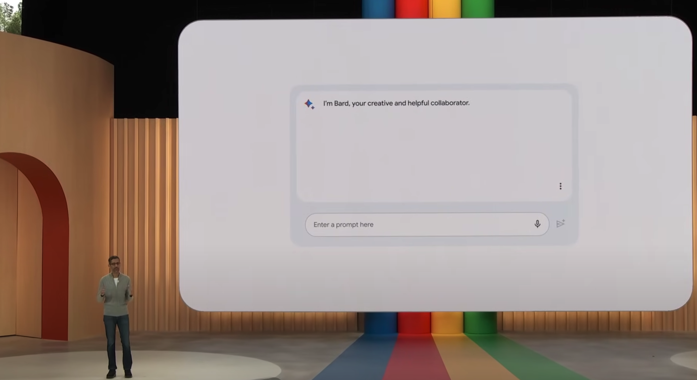

The increasing popularity of LLM technology motivated Google to address the need for a consumer solution. As a member of Google's early LLM consumer solution team, our task centered around creating a prototype for Google I/O. This evolved into a project now known as Google Bard. In my role within a five-person design team, I served as a designer and prototyper responsible for developing the Google App LLM solution for the event. The urgency stemmed from the CEO's insistence on reviewing Google's LLM solution before Google I/O, aligning it with the company's overall strategic planning. This initiative demonstrated the challenges inherent in swiftly developing and presenting a consumer-focused LLM solution, addressing both technological demands and executive expectations.
Using the insights from our dedicated researcher, the design team explored how to apply Google's latest advancements in large language models (LLMs) and adapt to changing user expectations. An in-depth analysis of ChatGPT usage patterns brought to light a strong user preference for authentic and engaging conversational experiences. The leadership team debated monetizing the product on launch, yet research consistently supported maintaining a purely chat-oriented experience for the time being. Additional questions included determining the appropriate level of creativity to incorporate into the LLM and the acceptable degree of tolerance for hallucinations. The leadership team moved towards restraining creativity to address hallucination concerns. The LLM's confident responses created discussions on strategies on how to effectively manage user perception of confidence levels and how to incorporate reference material links into responses from the LLM.
The design team emphasis three different types of users: one who's curious and keen on learning about science, another researching consumer products like coffee makers, and anotherSeat planning a vacation. Our approach prioritized accuracy, placing less emphasis on ads, which was influenced by a previous public Google presentation that drew negative media attention due to inaccurate data. These varied user profiles shaped our strategy, ensuring a well-balanced approach that considers user interests, accuracy, and targeted advertising.
The product team asked us to address how users start chat threads and transition between them. We also considered which flows to support and the appropriate times to display ads. While some explorations included integrating ads into the results, users did not perceive this approach as particularly useful. Additionally, questions arose about how to color chat bubble responses to signify the type of generated response and how to strike a balance between design and usability. These considerations shaped our exploration and decision-making process in ensuring a user-friendly and visually effective design.
Ads were initially integrated into chat flows with product and service inquiries, but were later removed after receiving negative feedback in user tests.
Prototypes demonstrated how the LLM could respond to three scenarios, with the chosen flow showcasing a variety of user questions based on insights from user research. The three scenarios answering questions included: finding the best place to raise a family; finding suitable plants to have in an apartment; and more scientific query on understanding ocean waves, catering to high school students. The final prototype flow was influenced by feedback from CEO Sundar Pichai, ensuring alignment with leadership insights.
Design explorations also included several mocks featuring ads in different formats, expanding on existing search result ads.
One prototype scenario, targed at high school students, answered questions about understanding ocean waves.
Tests showed largely positive user responses to the prototypes, yet a notable dissatisfaction surfaced with the inclusion of ads, perceived as intrusive and forced into the LLM. Consequently, we eliminated ads from the flow. Substantial concerns regarding hallucinations prompted an evaluation of our engineering team's capability to manage them effectively. To tackle this, we limited the creativity level of the LLM to improve accuracy.
The final design made its debut at Google I/O in May 2023, with an introduction by Sundar Pichai and a demonstration by a product VP, gathering significant positive media attention.
One of the three scenarios answering questions included finding the best place to raise a family.
Senior leadership showcased portions of the designs in their Google I/O 2023 Bard presentation.
